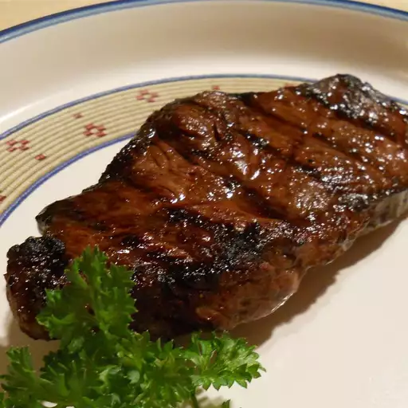

Steak

Description
Prepare to savor a delectable steak experience crafted with simple yet flavorful ingredients.
Starting with a base of olive oil, this marinade sets the stage for tender meat.
Balsamic vinegar adds a tangy kick while tenderizing the steak.
The combination of Worcestershire sauce, soy sauce, and Dijon mustard infuses depth and richness.
Fresh garlic, along with a dash of salt and pepper, further enhances the savory profile.
Get ready to enjoy a juicy, flavorful steak that's easy to make yet unforgettable to taste.
Ingredients
- Beef (ribey or tenderloin is best)
- 1/4 cup Olive Oil
- 1/4 cup Balsamic Vinegar
- Sauces
- 1/4 cup Worcestershire Sauce
- 1/4 cup Soy Sauce
- 2 teaspoons Dijon Mustard
- Seasonings
- 2 teaspoons Minced Garlic
- Pinch of Salt
- Pinch of Pepper
Steps
- Mix the Marinade: In a bowl, combine the olive oil, balsamic vinegar, Worcestershire sauce, soy sauce, Dijon mustard, minced garlic, salt, and pepper. Stir well to ensure all the ingredients are thoroughly incorporated.
- Marinate the Steak: Place the steak in a shallow dish or resealable plastic bag and pour the marinade over it, ensuring the steak is fully coated. Cover the dish or seal the bag and refrigerate for at least 30 minutes, or preferably overnight, to allow the flavors to penetrate the meat.
- Preheat the Grill or Pan: Preheat your grill to medium-high heat or heat a skillet or grill pan over medium-high heat on the stovetop. Make sure the cooking surface is well-heated before adding the steak.
- Cook the Steak: Remove the steak from the marinade, allowing any excess marinade to drip off. Place the steak on the preheated grill or pan. Cook the steak to your desired level of doneness, flipping it halfway through the cooking process. The cooking time will vary depending on the thickness of the steak and your preferred level of doneness. As a general guide, cook for about 4-5 minutes per side for medium-rare, adjusting the time accordingly for rare or well-done steak.
- Rest the Steak: Once cooked to your liking, transfer the steak to a cutting board and let it rest for a few minutes. This allows the juices to redistribute throughout the meat, ensuring a juicy and tender result.
Return